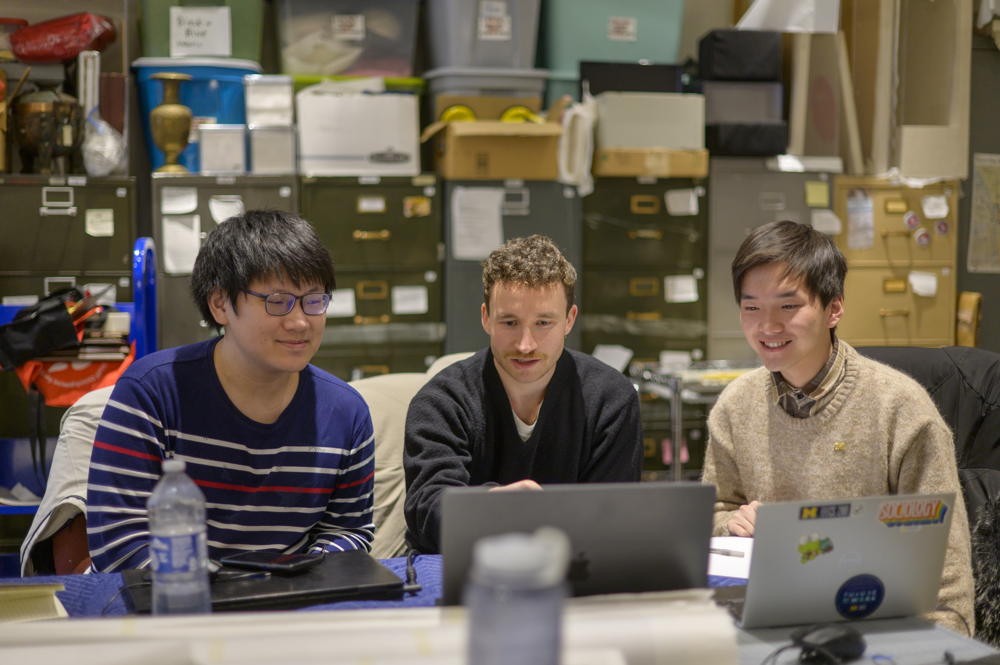
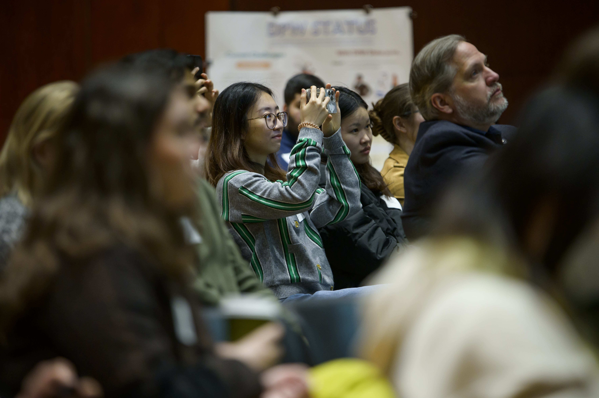

Navigating Your Active Project
Master the art of adaptive project management, human-centered fieldwork,
and constructive feedback as you execute your project in real time.
Phase 3: Managing & Executing in the Field
The Value of Navigating Friction & Active Execution

The middle of an engaged learning project is where real growth happens—and
where real challenges surface. Real-world projects rarely follow a straight
line. Requirements shift, team dynamics evolve, clients face unexpected
internal constraints, and research data yields surprising results.
The true value of this phase lies in developing
resilience, adaptability, and ethical agility. Learning to
manage "scope creep," navigate mid-project feedback, and re-align technical
decisions with human needs are the exact experiences that distinguish top
UMSI graduates. When you view friction not as a barrier, but as a natural
part of the applied learning process, you develop the strategic
problem-solving skills needed in modern information careers.
Phase 3: Managing & Executing in the Field

Conducting research, tracking progress, and maintaining clear communication
with project sponsors.
Focus & Objectives
-
Fieldwork & Research Methods:
Apply human-centered design tools to observe contexts and extract
insights.
-
Sponsor & Client Updates:
Maintain transparency with regular progress reporting.
-
Feedback Loops:
Gather, evaluate, and integrate constructive feedback mid-project.
Featured Resources & Handouts
-
Observation & Needfinding
-
HFLI - AEIOU Worksheet:
Framework to categorize field observations
(Activities, Environments, Interactions, Objects, Users).
-
User Research
-
HFLI User-Needs-Insights Worksheet:
Translates raw interview and observation data into
actionable design insights.
-
Feedback Management
-
HFLI Feedback Worksheet:
Structures mid-point feedback cycles between students,
instructors, and partners.
-
Case Analysis
-
Ginsberg Center Community Engagement Cases Handout:
Practical scenarios illustrating ethical dilemmas and
resolution strategies.
-
Sponsor Tracking
-
Sponsor Dashboard Template:
High-level status dashboard to keep external clients
informed on project health.
-
Communications Plan
-
Student Project Communications Plan Example & Template:
Establishes meeting cadences, channels, and response
windows for teams.
-
Workflow Tracking
-
Project Management Worksheet:
Hands-on tool for breaking down project goals into
milestones and task assignments.